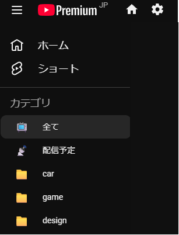

YouTubeを“自分専用アプリ”に。
ノイズを排した視聴環境を作る「NeuraTube」紹介＆取扱ガイド
毎日YouTubeを開くたび、興味のないショート動画や、アルゴリズムがおすすめしてくる誘惑に時間を奪われていませんか？
「NeuraTube（ニューラチューブ）」は、YouTubeの画面からノイズを徹底的に排除し、自分が本当に登録したチャンネルの動画だけに集中できる環境を構築するためのブラウザ拡張機能です。
技術的な難しい仕組みはすべて裏側に隠し、あなたのYouTube視聴を「快適で確実なもの」へと変えるための使い方を優しく解説します。
💡 NeuraTubeで変わる3つの視聴体験
登録チャンネルの動画だけが並ぶノイズレスな環境に。
開始60秒前に自動でタブが開き、画面を最前面化してお知らせ。
「音楽」「VTuber」「教養」などジャンル別にチャンネルを整理。
01. 🛠️ 【かんたん】導入手順（インストール）
NeuraTubeは開発者向けパッケージ（Unpacked Extension）として提供されています。以下の手順で、あなたのブラウザに簡単に取り込むことができます。
-
ファイルを準備する
配布されたソースコード（フォルダ一式）をパソコンの使いやすい場所に保存し、解凍しておきます。 -
ブラウザの設定画面を開く
Google Chrome（またはEdgeなどのChromium系ブラウザ）を開き、アドレスバーに以下を入力して移動します。
chrome://extensions/ -
デベロッパーモードをONにする
管理画面の右上にある「デベロッパーモード」のスイッチをONにします。 -
システムを読み込む
左上に表示される「パッケージ化されていない拡張機能を読み込む」ボタンをクリックし、手順1で解凍したフォルダを選択します。 -
インストール完了
一覧に「NeuraTube」が表示されたら、いつでも使える状態になります！
02. 📖 クイック取扱説明書（ファーストステップ）
導入したら、まずはあなた専用のデータベースを作りましょう。設定は最初の1回だけで完了します。
ステップ 1：購読チャンネルをスキャンする
- YouTubeを開き、画面右上（またはヘッダー）に追加された「 ⚙️（設定ボタン） 」をクリックします。
- 「データ保守」にある「YouTube 登録チャンネル一覧を開く」をクリックします。
- 新しいタブが開いたら、画面右下にある赤い「完全スキャン開始」ボタンを押します。
- 自動でスクロールされ、全チャンネルがスキャンされます。「完了！」と出たらタブを閉じてOKです。
ステップ 2：カテゴリを作る
設定画面の「カテゴリ編集」で、あなたがよく見るジャンル（例：音楽、ガジェット、VTuberなど）を入力して「追加」します。ドラッグ＆ドロップで表示順も自由に変えられます。
ステップ 3：チャンネルを振り分ける
「チャンネルリスト & 振り分け」で、スキャンされたチャンネルにカテゴリを割り当てます。「未分類」フィルタを使うと、サクサク作業が終わります（自動保存されます）。
03. 📺 主要機能の紹介と使い方

1. 整理整頓されたスマート・サイドバー
設定が終わると、YouTubeの左メニューにあなただけのカテゴリが表示されます。
- 📺 全て 通常のフィードを表示
- 📡 配信予定 今後のライブ・プレミアを時間順に
- 📁 各カテゴリ 割り当てたチャンネルの動画だけを表示

2. ノイズ・キャンセリング機能
設定から有効にすることで、動画一覧に紛れ込む「Shorts（ショート動画）」や「アルゴリズムによるおすすめ動画棚」を跡形もなく消し去ります。スクロールしても邪魔なものは一切出てきません。
3. 絶対に見逃さない「配信の自動オープン予約」
楽しみにしているライブ配信やプレミア公開を絶対に逃さないための強力なアシスト機能です。
- 予約方法：動画のサムネイルやリンクを 右クリック し、「この配信を自動オープン予約」を選択するだけ。
- 自動オープン：配信が始まる 60秒前 になると、自動的に新しいタブでその配信ページを開き、ウィンドウを最前面に呼び出して合図してくれます。
- 自動リフレッシュ：待機所で待っている間、配信が始まった瞬間に自動でページを読み込み、再生を開始してくれます。
4. PWA（アプリ化）への完全対応
YouTubeを「ウィンドウとして開く（PWA）」でお使いの場合、起動した瞬間に一瞬のチラつきもなく「登録チャンネルフィード」を直接開くように自動制御されます。まるで最初からパソコン専用のYouTubeアプリを起動したかのような快適さを体験できます。
- 非公式ツールです：NeuraTubeは個人の開発者によって提供されている非公式なツールです。YouTube公式やGoogle社とは関係ありません。
- 仕様変更による影響：YouTube側のデザインやシステムの大きな変更によって、一時的に機能が使えなくなる場合があります。
- 自己責任での運用：本ツールの利用により生じたトラブルや不利益について、開発元は責任を負いかねますのでご了承ください。